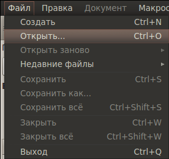
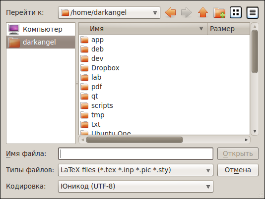
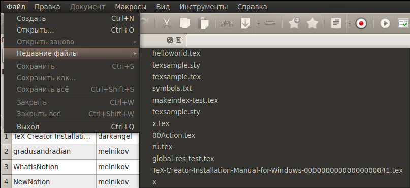

[Назад: 1.1 Настройки]
[Далее: 2. Основные функции]
Создание документа
Создание нового документа
Создать новый пустой документ можно нажав соответствующую кнопку на панели инструментов:

либо выбрав в меню Файл пункт Создать:

либо воспользовавшись сочетанием клавиш Ctrl+N.
Открытие файла
Открыть файл, уже существующий на диске, можно нажав кнопку на панели инструментов:

либо выбрав в меню Файл пункт Открыть...:

либо воспользовавшись сочетанием клавиш Ctrl+O.
После этого появится диалог, в котором предлагается выбрать, какой именно файл вы хотите открыть:

Вы можете изменить размер диалога для удобства навигации - размеры и положение на экране сохраняются после закрытия.
Также можно выбрать, в какой кодировке открывать файл (раскрывающийся список в нижней части диалога).
По умолчанию используется кодировка, указанная в настройках.
Если после открытия файла выяснилось, что он имеет другую кодировку (содержимое отображается некорректно,
в виде так называемых "кракозябр", то можно открыть данный файл заново,
выбрав в меню Файл пункт Открыть заново:

а затем выбрав нужную кодировку из списка.
Если файл перед этим был изменен и не сохранен, то будет запрошено подтверждение действия,
чтобы случайно не потерять сделанные в файле изменения.
Кроме того, можно открыть один из недавно открытых файлов, выбрав в меню Файл пункт Недавние файлы:

а затем выбрав требуемый файл из списка.
Всего в списке хранится до 15 файлов, наиболее старые из них вытесняются при открытии новых.
[Назад: 1.1 Настройки]
[Далее: 2. Основные функции]